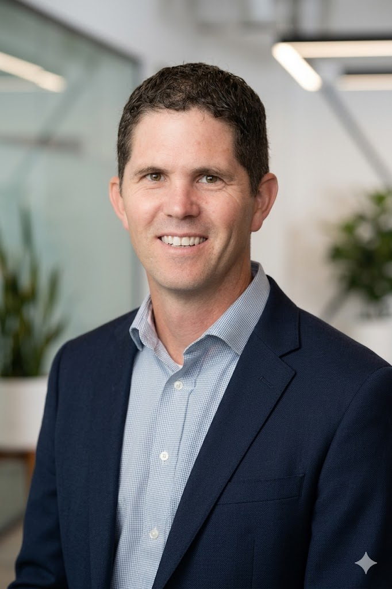

Free Consultation.
One hour. No pitch, no obligation, no invoice afterwards.
Free one-hour consultation · No pitch, no obligation
What it is
Free Consultation is a conversation about your business, not a sales call. You describe what you are doing and where it hurts. We ask questions, and at the end we tell you honestly what we think, including when the answer is that you do not need us.
It is an hour. It is free every time, for everyone, and it stays free whether or not anything comes of it.
Who it’s for
- Everyone. This is the one step nobody skips, because nothing after it makes sense until we understand what you actually do.
What you walk away with
- A plain read on where technology could help you and where it would just add cost.
- At least one thing you could do yourself, for free, this week.
- If there is work worth doing, a rough sense of what it is and what it would take. If there is not, we will say so.

Both halves of the problem.
John Correia is a professor of management information systems who researches how people actually adopt technology. Seven peer-reviewed papers, in journals including MIS Quarterly, on why people take up a tool or quietly work around it.
He also builds. Dashboards, automations, web apps, and a spatial audio platform taken from an architecture plan to working software. He directs a student consulting group that runs like a small company, which means he spends his week handing work to people who have to run it without him. That is the same problem you have.
So the first hour is spent listening, which is the part most people skip.
Let’s figure it out together.
Every conversation starts the same way: one free hour, no pitch, and an honest answer about whether we can help.